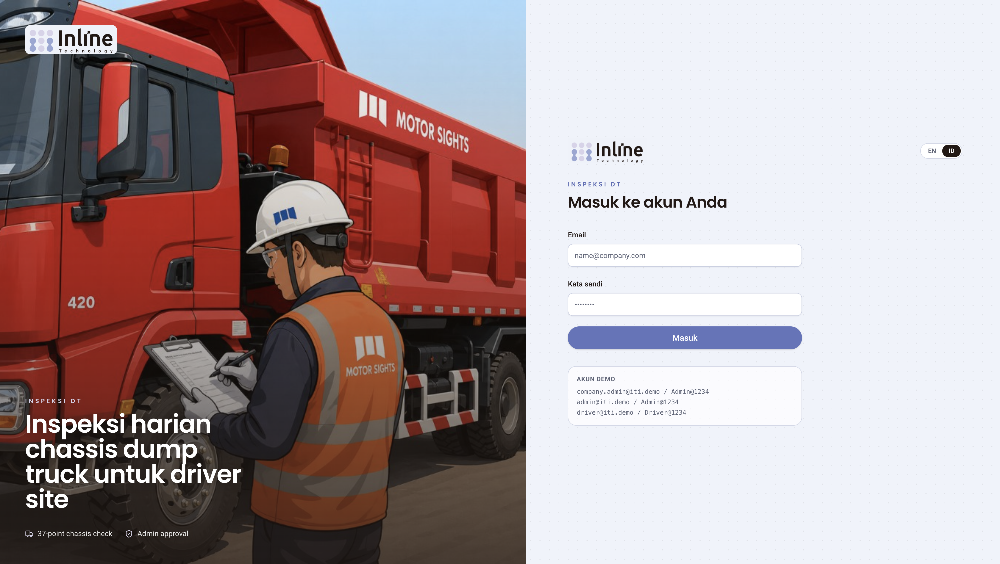
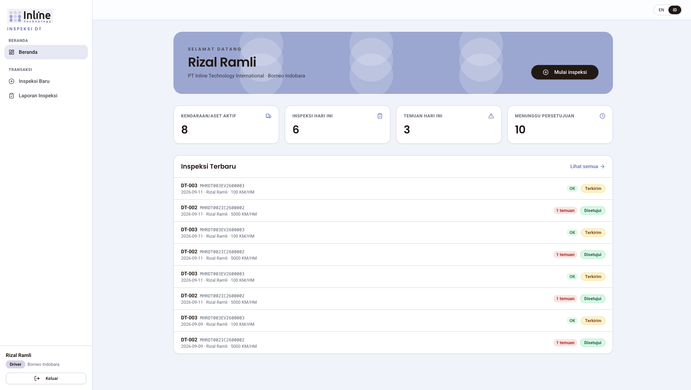
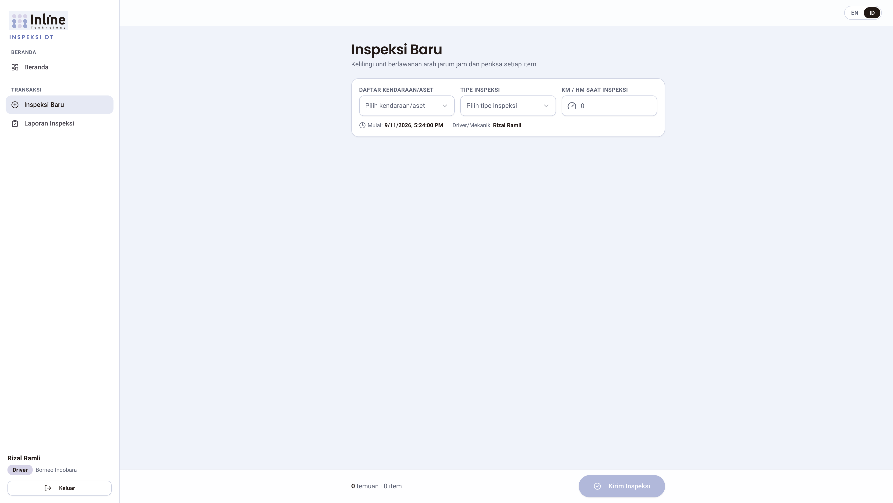
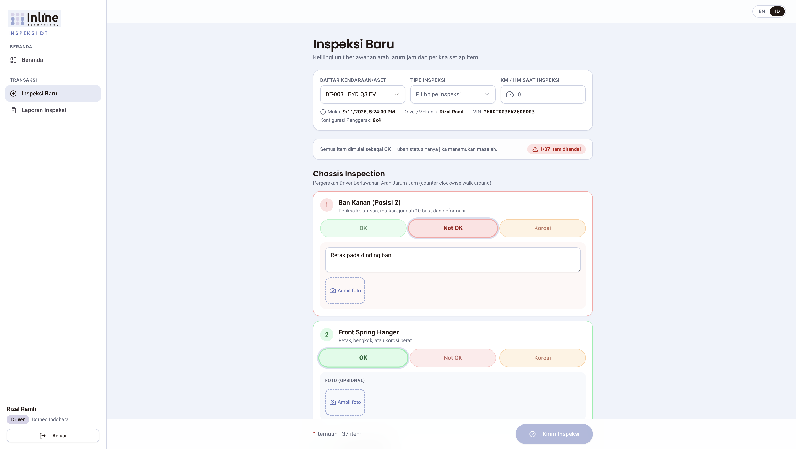
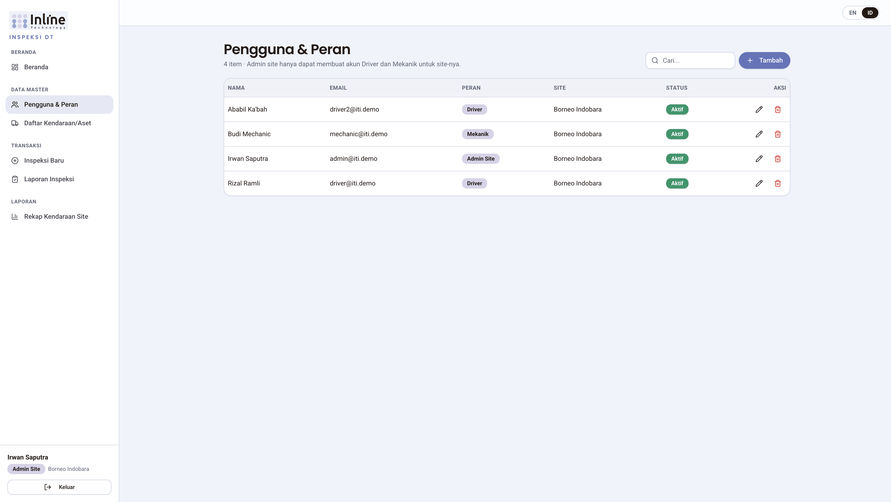
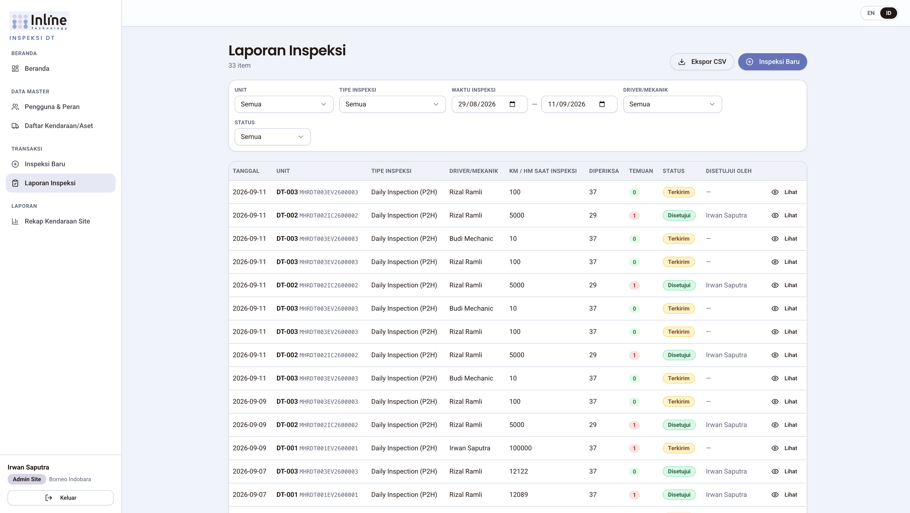
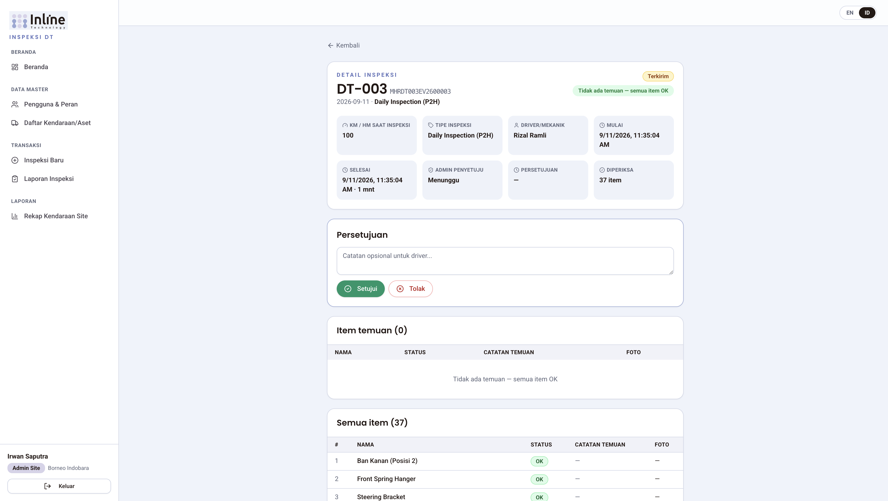
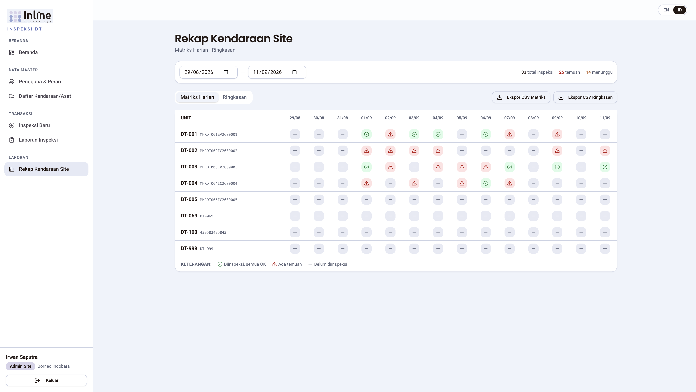
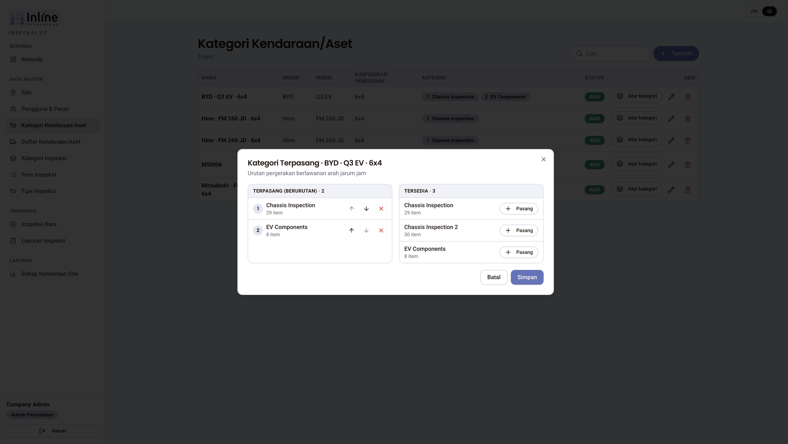
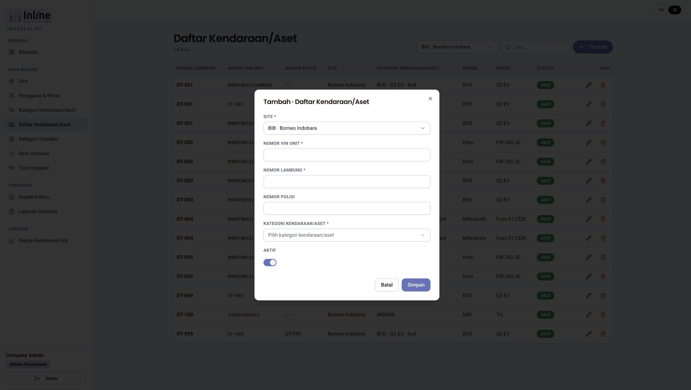

Cara memakai dokumen ini
- Buka aplikasi Inspeksi DT.
- Di pojok kanan atas, pilih ID (bukan EN) agar label di layar sama dengan panduan ini.
- Nama tombol, menu, dan kolom di dokumen ini dikutip persis dari antarmuka.
Jika bahasa layar masih Inggris, klik ID pada sakelar EN / ID. Pilihan bahasa tersimpan di peramban.
01Tentang aplikasi
Inspeksi DT adalah aplikasi inspeksi harian chassis dump truck untuk driver dan mekanik di site. Dengan aplikasi ini Anda dapat:
- mengisi checklist walk-around (keliling unit);
- merekam foto temuan;
- meminta persetujuan admin site;
- melihat laporan dan rekap kendaraan per site.
Inspeksi dikirim sekali. Setelah Kirim Inspeksi, data tidak dapat diubah. Tidak ada simpan draf, ekspor PDF inspeksi, atau pemulihan kata sandi mandiri.
02Peran dan menu
Hak akses mengikuti peran akun. Mekanik memiliki hak yang sama dengan Driver.
| Peran | Menu yang terlihat | Tidak dapat |
|---|---|---|
| Superadmin | Semua menu, termasuk Perusahaan | — |
| Admin Perusahaan | Beranda, Site, Pengguna & Peran, Kategori Kendaraan/Aset, Daftar Kendaraan/Aset, Kategori Inspeksi, Item Inspeksi, Tipe Inspeksi, Inspeksi Baru, Laporan Inspeksi, Rekap Kendaraan Site | Perusahaan |
| Admin Site | Beranda, Pengguna & Peran, Daftar Kendaraan/Aset, Inspeksi Baru, Laporan Inspeksi, Rekap Kendaraan Site | Perusahaan, Site, master checklist (kategori/item/tipe inspeksi, kategori kendaraan) |
| Driver | Beranda, Inspeksi Baru, Laporan Inspeksi | Data Master, Rekap, persetujuan |
| Mekanik | Sama dengan Driver | Sama dengan Driver |
Kelompok menu di sidebar:
- Beranda
- Data Master — sesuai peran
- Transaksi — Inspeksi Baru, Laporan Inspeksi
- Laporan — Rekap Kendaraan Site (admin)
Di bagian bawah sidebar: nama pengguna, lencana peran, nama site (jika ada), dan tombol Keluar.
03Masuk dan keluar
3.1 Masuk
- Buka halaman Masuk ke akun Anda.
- Isi Email dan Kata sandi.
- Klik Masuk.
Jika gagal, muncul pesan Gagal masuk. Setelah 5 percobaan gagal, akun dikunci 15 menit. Sesi berlaku 12 jam. Akun Nonaktif tidak dapat masuk.
Tidak ada tautan lupa kata sandi. Perubahan kata sandi dilakukan admin di Pengguna & Peran (field Kata sandi; kosongkan untuk mempertahankan kata sandi saat ini). Minimum 6 karakter.

3.2 Keluar
Klik Keluar di sidebar. Anda kembali ke halaman masuk.
04SOP Driver dan Mekanik
Driver dan mekanik hanya melihat inspeksi yang mereka kirim sendiri. Nama pelaksana terisi otomatis (akun yang sedang masuk); tidak ada dropdown pilih orang lain.
4.1 Beranda
Setelah masuk, halaman Beranda menampilkan Selamat datang plus nama Anda, tombol Mulai inspeksi, dan kartu:
- Kendaraan/Aset Aktif
- Inspeksi Hari Ini
- Temuan Hari Ini
- Menunggu Persetujuan
Di bawahnya: Inspeksi Terbaru dan tautan Lihat semua. Jika kosong: Belum ada data.

4.2 Mulai inspeksi
Buka Inspeksi Baru dari menu Transaksi, atau klik Mulai inspeksi di Beranda.
Subjudul di layar: Kelilingi unit berlawanan arah jarum jam dan periksa setiap item.
Isi formulir atas:
| Kolom | Keterangan |
|---|---|
| Daftar Kendaraan/Aset | Wajib. Pilih unit aktif di site Anda. |
| Tipe Inspeksi | Wajib. Contoh seed: Daily Inspection (P2H), Weekly Inspection, Pre-Delivery Inspection (PDI). |
| KM / HM saat inspeksi | Wajib. |
| Mulai, Driver/Mekanik, VIN, Konfigurasi Penggerak | Terisi otomatis. |
Jika unit belum punya kategori inspeksi: Unit ini belum memiliki kategori inspeksi. Minta admin memasang kategori.

4.3 Checklist walk-around
Checklist disusun dari Kategori Kendaraan/Aset unit → kategori inspeksi terpasang (urutan berlawanan arah jarum jam) → item terpasang.
Petunjuk di layar: Semua item dimulai sebagai OK — ubah status hanya jika menemukan masalah.
Progres: {n}/{total} item ditandai.
Untuk setiap item:
- Baca nama item dan Panduan Teknis.
- Biarkan OK jika tidak ada masalah.
- Jika ada masalah, pilih status yang tersedia untuk item itu: Not OK, Korosi, Kurang, atau Longgar (tergantung Pilihan Status item).
- Untuk temuan (status bukan OK), isi Catatan temuan (Jelaskan temuan...).
- Foto bersifat Foto (opsional) untuk semua status.
Cara mengambil foto:
- Klik Ambil foto (kamera belakang jika tersedia).
- Jepret.
- Ulangi atau Gunakan foto.
- Tunggu Memproses... (kompresi, maksimum 500 KB).
Jika kamera ditolak, unggah berkas gambar. Hanya format gambar yang diterima.
Opsional di akhir: Catatan umum — Ada hal lain yang perlu dilaporkan?

4.4 Kirim
Klik Kirim Inspeksi. Saat proses: Mengirim...
Syarat: kendaraan/aset, tipe inspeksi, KM/HM, dan semua item sudah diperiksa. Jika kurang: Pilih kendaraan/aset, tipe inspeksi, isi KM/HM, dan periksa semua item.
Setelah berhasil: Inspeksi berhasil dikirim. Status menjadi Terkirim.
Tidak dapat menyimpan draf atau mengedit setelah kirim. Perbaiki kesalahan dengan inspeksi baru atau hubungi admin.
4.5 Melihat laporan sendiri
Menu Laporan Inspeksi menampilkan hanya inspeksi Anda. Filter: Unit, Tipe Inspeksi, Waktu inspeksi (Dari — Sampai), Status (Semua / Terkirim / Disetujui / Ditolak).
Kolom: Tanggal, Unit, Tipe Inspeksi, Driver/Mekanik, KM/HM, Diperiksa, temuan, Status, Disetujui oleh, Lihat.
Klik Lihat untuk Detail Inspeksi: KM/HM, tipe, driver/mekanik, mulai, selesai, durasi (mnt), admin penyetuju, persetujuan, tabel Item temuan dan Semua item.
Driver/mekanik tidak melihat tombol Setujui / Tolak.
05SOP Admin Site
Admin site mengelola site miliknya: pengguna Driver/Mekanik, daftar kendaraan, persetujuan inspeksi, dan rekap.
5.1 Pengguna & Peran
Buka Pengguna & Peran. Admin site hanya membuat Driver dan Mekanik untuk site-nya. Petunjuk di layar: Admin site hanya dapat membuat akun Driver dan Mekanik untuk site-nya. Saat ubah, field Peran tidak dapat diganti.
Kolom form: Nama, Email, Peran, Site (otomatis), Kata sandi, Aktif.
Tombol: Tambah, Ubah, Hapus, Cari..., Simpan, Batal. Hapus: Hapus data ini? — Tindakan ini tidak dapat dibatalkan.

5.2 Daftar Kendaraan/Aset
Buka Daftar Kendaraan/Aset. Site mengikuti akun login (tidak ada pemilih Site).
| Kolom | Wajib |
|---|---|
| Nomor VIN Unit | Ya |
| Nomor Lambung | Ya |
| Nomor Polisi | Tidak |
| Kategori Kendaraan/Aset | Ya — menentukan checklist |
| Aktif | — |
Merek dan model tampil dari kategori kendaraan.
5.3 Menyetujui atau menolak inspeksi
- Buka Laporan Inspeksi.
- Filter Status = Terkirim (atau Menunggu di kartu beranda).
- Klik Lihat.
- Pada kartu persetujuan: isi Catatan admin (opsional) lalu Setujui atau Tolak.
Hanya inspeksi berstatus Terkirim yang dapat diproses. Setelah Disetujui atau Ditolak, kartu persetujuan tidak muncul lagi.


5.4 Rekap Kendaraan Site
Menu Rekap Kendaraan Site — Matriks Harian · Ringkasan.
- Rentang tanggal maksimum 92 hari.
- Matriks Harian: kisi unit × tanggal. Hijau = Diinspeksi, semua OK; merah = Ada temuan; abu = Belum diinspeksi. Klik sel untuk membuka detail. Ekspor CSV Matriks.
- Ringkasan: agregat per unit (Nomor Lambung, VIN, Merek, Model, Konfigurasi Penggerak, Total Inspeksi, Hari Diinspeksi, Temuan, Ada Temuan, Disetujui, Menunggu, Inspeksi Terakhir, KM/HM Terakhir). Ekspor CSV Ringkasan.

Ekspor CSV juga tersedia di Laporan Inspeksi (mengikuti filter aktif).
06SOP Admin Perusahaan
Admin perusahaan mengelola master data perusahaan (bukan menu Perusahaan) dan semua site di perusahaannya.
6.1 Site
Site: Nama, Kode, Lokasi, Aktif. Perusahaan terisi otomatis. Hapus ditolak jika masih ada kendaraan atau pengguna.
6.2 Item, kategori, dan tipe inspeksi
Urutan kerja yang disarankan:
- Item Inspeksi — Nama, Panduan Teknis, Pilihan Status (OK, Not OK, Korosi, Kurang, Longgar), Aktif.
- Kategori Inspeksi — Nama, Deskripsi. Klik Atur item untuk Item Terpasang (urutan walk-around). Panel Terpasang (berurutan) vs Tersedia; Pasang, Lepas, Naik, Turun. Satu item boleh ada di beberapa kategori.
- Tipe Inspeksi — Nama, Kode, Deskripsi, Aktif. Dipilih saat mulai inspeksi; tidak mengubah isi checklist.
6.3 Kategori Kendaraan/Aset
Template merek/model/layout per perusahaan:
- Nama, Merek, Model, Konfigurasi Penggerak (4x2, 4x4, 6x2, 6x4, 6x6, 8x4, 8x8), Aktif.
- Atur kategori membuka Kategori Terpasang. Subtitle: Urutan pergerakan berlawanan arah jarum jam.
Checklist unit = gabungan item dari semua kategori inspeksi yang dipasang ke kategori kendaraan itu. Contoh: kategori EV Components hanya dipasang ke unit EV.

6.4 Daftar kendaraan — wajib pilih Site
Admin perusahaan (dan superadmin) melihat pemilih Site di header daftar dan di form tambah/ubah. Site wajib. Unit milik satu site.
Kolom sama seperti admin site, plus Site.

6.5 Pengguna
Admin perusahaan dapat membuat Admin Site, Driver, dan Mekanik (bukan Superadmin atau Admin Perusahaan lain). Pilih Perusahaan dan Site sesuai kebutuhan.
6.6 Inspeksi dan rekap
Sama seperti admin site, dengan pemilih Site di Laporan Inspeksi dan Rekap untuk berpindah site di dalam perusahaan. Filter Driver/Mekanik tersedia untuk admin. Dashboard menampilkan statistik seluruh site perusahaan.
07SOP Superadmin
Superadmin memiliki semua menu Admin Perusahaan, plus Perusahaan.
Perusahaan: Nama, Kode, Alamat, Aktif. Hapus ditolak jika masih ada site.
Di banyak halaman master, pilih Perusahaan (dan kadang Site) di header sebelum menambah data. Superadmin dapat membuat kelima peran. Admin Perusahaan tidak terikat site. Rekap mewajibkan pemilihan site.
08Laporan, status, dan ekspor
| Status | Arti |
|---|---|
| Terkirim | Baru dikirim; menunggu admin |
| Disetujui | Admin menyetujui |
| Ditolak | Admin menolak |
| Menunggu | Masih menunggu persetujuan (kartu beranda) |
Hanya admin (site, perusahaan, superadmin) yang menyetujui. Ekspor yang tersedia: Ekspor CSV, Ekspor CSV Matriks, Ekspor CSV Ringkasan. Tidak ada ekspor PDF per inspeksi.
Jika ada beberapa inspeksi pada unit yang sama di hari yang sama, sel matriks mengikuti inspeksi terakhir hari itu; sel merah jika ada temuan.
09Foto
- Foto opsional untuk setiap item (termasuk temuan).
- Maksimum 500 KB setelah kompresi di perangkat.
- Disimpan di server aplikasi; tampil di detail (klik untuk memperbesar).
- Masa simpan default 90 hari. Setelah dibersihkan: Foto telah dihapus setelah masa simpan 3 bulan; data inspeksi tetap tersimpan.
10Hierarki data
Checklist tidak disusun per unit satu per satu. Alurnya:
Perusahaan
├─ Item Inspeksi
├─ Kategori Inspeksi ── memasang item (banyak-ke-banyak, berurutan)
├─ Tipe Inspeksi
├─ Kategori Kendaraan/Aset ── memasang kategori inspeksi (berurutan)
└─ Site
└─ Unit (Daftar Kendaraan/Aset) ── satu kategori kendaraan
└─ Checklist = item dari kategori inspeksi yang terpasangUnit aktif tanpa kategori terpasang tidak dapat diinspeksi sampai admin memasang kategori.
11Pertanyaan umum
Unit tidak punya checklist. Minta Admin Perusahaan memasang Kategori Inspeksi ke Kategori Kendaraan/Aset unit itu.
Tidak bisa masuk. Periksa email/kata sandi, status Aktif, dan apakah akun terkunci 15 menit setelah 5 gagal. Tidak ada lupa kata sandi — hubungi admin.
Tidak ada tombol Setujui. Hanya admin, dan hanya jika status Terkirim. Driver/mekanik tidak menyetujui.
Foto hilang, datanya masih ada. Masa simpan foto habis (~3 bulan). Catatan inspeksi tetap.
Salah kirim inspeksi. Tidak dapat diedit. Kirim inspeksi baru atau minta admin menolak lalu ulangi sesuai prosedur site.
Mekanik vs Driver. Label peran berbeda; menu dan hak inspeksi sama.
Rekap kosong / error rentang. Pilih site (superadmin) dan rentang tidak lebih dari 92 hari.
Lampiran A — Glosarium status item
| Kode | Label di layar (ID) |
|---|---|
| OK | OK |
| NOT_OK | Not OK |
| KOROSI | Korosi |
| KURANG | Kurang |
| LONGGAR | Longgar |
Lampiran B — Akun demo (lingkungan lokal saja)
Akun berikut hanya untuk seed/demo lokal. Jangan dipakai sebagai SOP produksi. Jangan biarkan kata sandi demo di server bersama.
| Peran | Kata sandi | |
|---|---|---|
| Admin Perusahaan | company.admin@iti.demo | Admin@1234 |
| Admin Site | admin@iti.demo | Admin@1234 |
| Driver | driver@iti.demo | Driver@1234 |
Mekanik seed (mechanic@iti.demo) tidak tampil di panel Akun demo. Superadmin dibuat dari variabel lingkungan server, bukan dari panel ini.